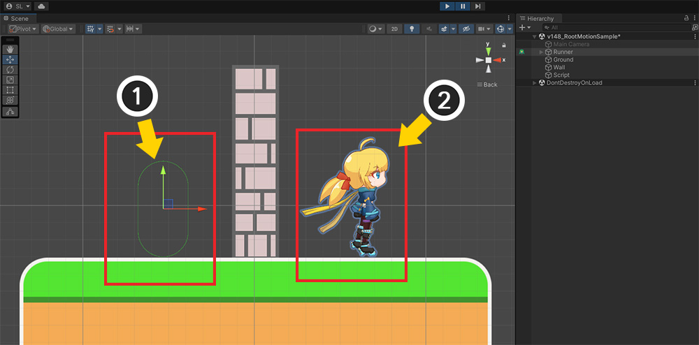
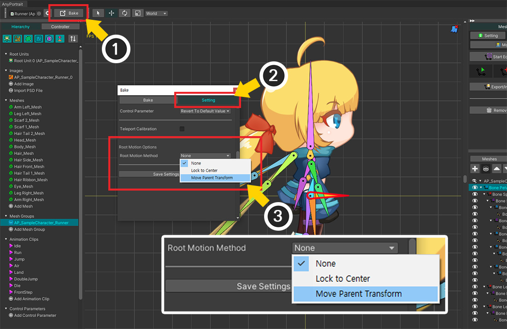
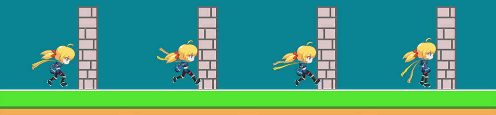
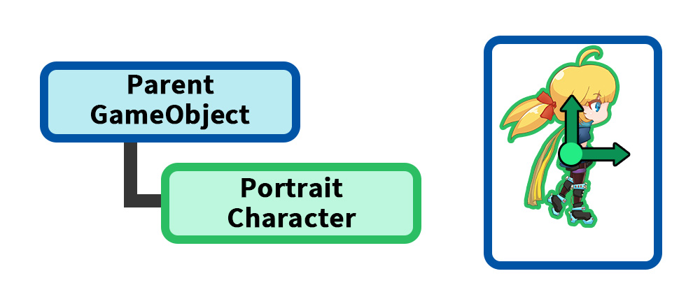
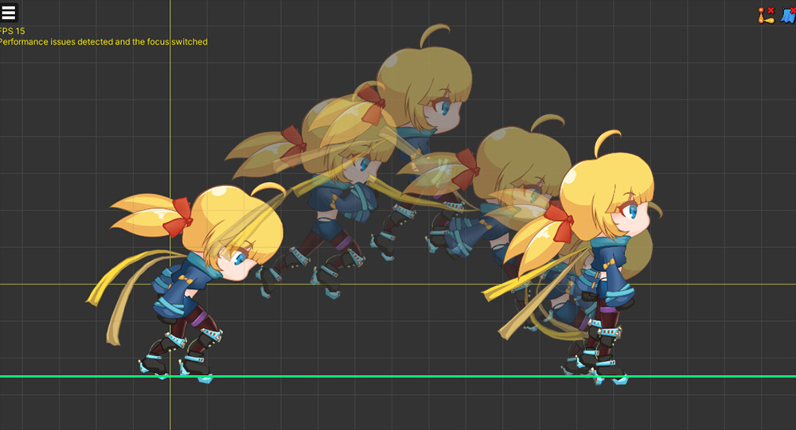
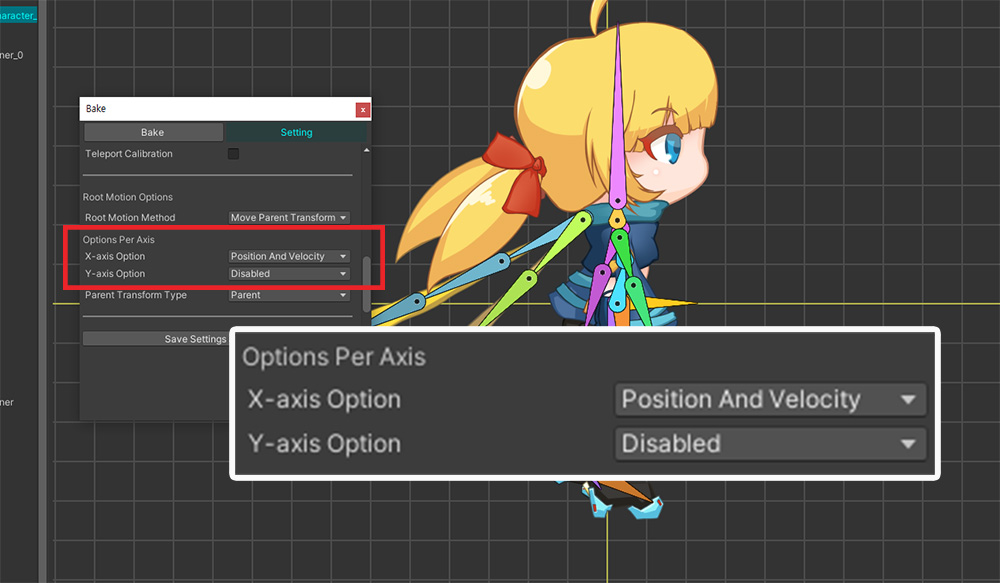
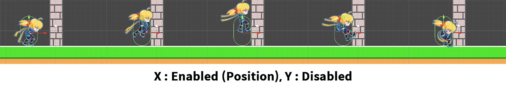
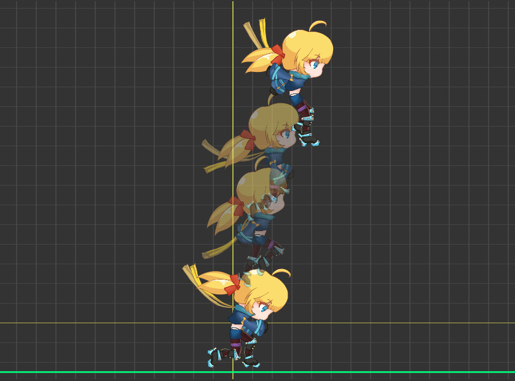
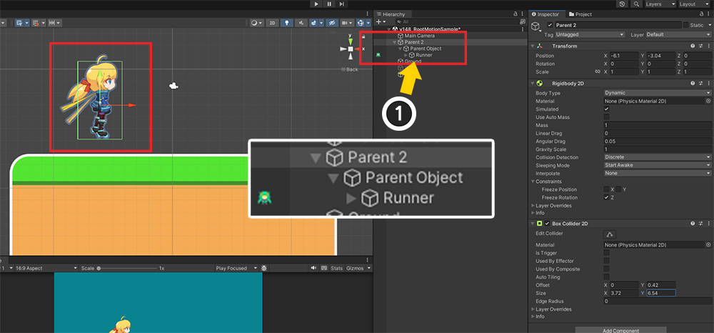
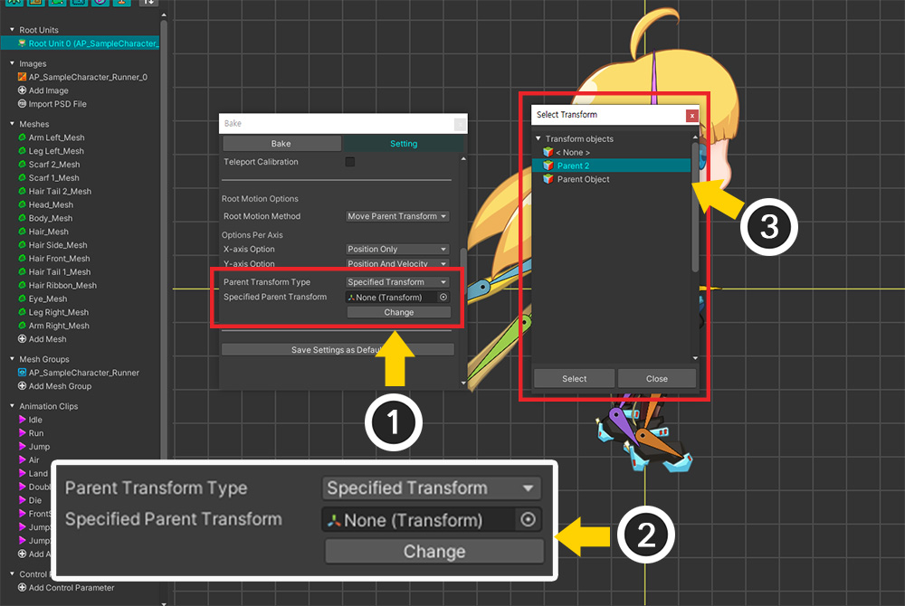

AnyPortrait > マニュアル > ルートモーション
ルートモーション
1.4.8
スケルタルアニメーションを作成するとき、キャラクターを開始位置から移動させたりします。
アニメではキャラクターが移動をしましたが、実際に「GameObject」が移動するわけではないので、ゲーム上で多少ぎこちないことがあります。
「アニメによって見られる位置」と「実際の位置」が異なるため、キャラクターが壁を突き飛ばすなどの問題が発生します。
このページでは、この問題を解決するための機能である「ルートモーション（Root Motion）」について説明します。
問題の状況、回避策、およびオプションを紹介します。
参考
- 「ルートモーション」はボーンを基準に動作するため、ボーンがないキャラクターには適用できません。
- このページでは「Rigidbody 2D」を利用して説明しましたが、3D物理エンジンの「Rigidbody」を使用したり、物理エンジンをまったく使用しない場合にも利用できます。
ルートモーションが必要な状況

「AnyPortraitパッケージ」で提供される「Runner」デモのキャラクターを利用してルートモーションが必要な状況を再現しましょう。
キャラクターが中心から右に移動するアニメーションを新たに制作してみました。

アニメーションが再生されると、キャラクターは右に飛躍します。
一般に、中心から大きく外れないようにキャラクターアニメーションを作成するのとは異なることがわかります。
それでは、このアニメーションをUnityシーンで再生してみましょう。

ルートモーションが必要な代表的な状況は、「物理機能」を一緒に利用した時です。
Unityの「2D物理」を利用するシーンを構成しましょう。
(1) 先に製作したキャラクターをシーンに配置します。
(2) シーンにキャラクターを含むいくつかのスプライトを配置します。
(3) キャラクターとスプライトに「Rigidbody 2D」、「Collider 2D」コンポーネントなどを追加しました。
ゲームを実行したとき、物理コンポーネントによってキャラクターは壁を越えてはいけません。

ゲームを実行し、先に制作したアニメーションを再生してみました。
物理コンポーネントに関係なく、キャラクターが壁を突き抜けて向かいに移動してしまいます。

この状態をシーンビューで確認しましょう。
(1) 「Rigidbody 2D」と「Collider 2D」が追加されたオブジェクトは、壁の左側に位置します。 つまり、「GameObject」は移動していない状態です。
(2) しかし、右に移動するアニメーションによってキャラクターがまるで壁を越えたかのように見えるのです。
ルートモーションで問題を解決
この問題は、「実際に見えるキャラクタの位置」と「キャラクターのGameObjectの位置」が大きく異なるために発生します。
したがって、この問題を解決するには、キャラクターの位置とGameObjectの位置が同じになるようにする必要があります。
この位置同期処理を「ルートモーション（Root Motion）」といいます。
「ルートモーション」を適用するには、次の条件を満たす必要があります。
(1) ルートモーション用ボーンを指定
キャラクターの位置を意味するボーンをルートユニットとなるメッシュグループごとに 1 つずつ指定しなければなりません。
このボーンは親ボーンを持たないルートボーンでなければなりません。
(2) apPortrait のオブジェクトが親 GameObject に属するように構成
「キャラクター」ユニットは、apPortraitではなくapPortraitの「親GameObject」から始まる必要があります。
位置を補正する基準が「親 GameObject」だからです。

まず、「キャラクターの見える位置」を意味する「ルートモーションのためのボーン」を指定してみましょう。
(1) メッシュグループを選択します。 このメッシュグループは、ルートユニットとして登録されるメッシュグループでなければなりません。
(2) 「Bone 」タブを選択した後、キャラクターの中心となるボーンを選択します。 ここでは「Pelvis」ボーンを選択しました。 これは親ボーンを持たないルートボーンでなければなりません。
(3) 「Root Motion」ボタンを押して有効にします。
これは、ルートユニットとなるすべてのメッシュグループに対して同じように実行する必要があります。

(1) 「Bake」ボタンを押します。
(2) 「Setting」タブを押します。
(3) 「Root Motion Options」で「Root Motion Method」の値を「Move Parent Transform」に変更します。
「Root Motion Method」オプションの値はそれぞれ次のとおりです。
- None : ルートモーションを無効にします。
- Lock to Center : キャラクターが常に親 GameObject の中心に位置するように固定します。
- Move Parent Transform : キャラクターを親 GameObject の中心に固定し、親 GameObject の Transform をアニメーションに従って代わりに移動させます。

ルートモーションオプションを有効にすると、上記のように追加のオプションが表示されます。
上記のように設定した後、「Bake」を実行します。
追加のオプションは次のとおりです。
- Options Per Axis : ルートモーションをX、Y軸ごとに異なるように設定できます。 ルートモーション機能が「位置」のみを制御するか、「位置とRigidbodyの速度」の両方を制御するかを決定できます。 X軸とY軸のいずれかにルートモーションを適用することもできます。
- Parent Transform Type : ルートモーションの方式が Move Parent Transform の場合、apPortrait の親 GameObject を対象に移動をさせるのに、このとき条件に合った他の GameObject を対象にすることが可能です。

Unityシーンに行き、シーン構成をルートモーションに合わせて修正しましょう。
(1) AnyPortrait で制作されたキャラクターが親 GameObject に属するように構成します。
(2) 物理コンポーネント（Rigidbody 2D、Collider 2D）をAnyPortraitで作成された文字ではなく親GameObjectに追加します。
(3) 位置をよく調整し、上記のように1つのキャラクターのように動作するようにします。

それでは、ゲームを実行してアニメーションを再生しましょう。
アニメーションによってキャラクターが移動をすると、親 GameObject が実際に一緒に移動することになり、物理コンポーネントによって壁を越えずに自然に衝突するのが見られます。
上記のように「ルートモーション」を使用すると、キャラクターアニメーションとGameObjectの位置を同期させることで問題を解決できます。
ルートモーションの動作原理
ルートモーションは、Unityを含む複数のゲームエンジンがサポートする機能です。
AnyPortraitの場合は、どのプロセスを通じてルートモーションが動作するかをお見せしましょう。

AnyPortraitは別の「親GameObject」を利用してルートモーションが動作します。
親 - 子関係の2つのGameObjectの位置を制御することがルートモーションの中心です。

ルートモーションが動作する過程を示すイメージです。
「親GameObjectの位置(上の青いギズモ)」と「キャラクターの位置(下の緑のギズモ)」がどのように同期されるか順に確認してみましょう。
（緑のギズモは、apPortraitのTransform位置ではなく、ルートモーション用のボーンの位置を意味します。）
(1) シーンで構成されたデフォルト状態です。
アニメーションが再生されない場合、キャラクターは親と一緒にまるで「一つのオブジェクト」のように配置されて動作します。
(2) アニメーションが再生された直後の状態です。
キャラクターがアニメーションによって移動すると、親 GameObject の位置と違いが発生します。
このページの前半で紹介した問題がまさにこの段階です。
(3) ルートモーションが適用される最初のステップである「Lock to Center」です。
このステップでは、ルートモーション用に指定されたルートボーンが親 GameObject の中心に位置するように、アニメーションの反対方向に文字を移動します。
このプロセスを経て、キャラクタと親GameObjectの位置は再び同じになります。
(4) ルートモーションの次のステップである「Move Parent Transform」です。
アニメーションによってルートボーンが移動しなければならない変位ほど、キャラクターではなく親 GameObject の Transform を移動させることです。
この段階まで実行すると、ルートモーションが完全に適用されます。
Lock to Center
「Root Motion Method」の先に紹介した「Move Parent Transform」ではなく「Lock to Center」に設定すると、どのように動作するかを確認しましょう。

(1) 「Bakeダイアログ」を開きます。
(2) 「Root Motion Method」の値を「Lock to Center」に設定します。

「Bake」を実行してゲームを実行すると、上記のようにキャラクターが配置された位置でまったく動かないことがわかります。
軸ごとに他のオプションを適用
ルートモーションをX、Y軸によって異なるように適用することが可能です。
特定の軸にのみルートモーションを適用したり、動作方法を異なる方法で設定したりできます。

X、Y軸ごとにルートモーションが異なる動作をする結果を見るために、アニメーションを上記のように修正してみました。
キャラクターがX軸、Y軸で大幅に動くので、それぞれの結果を比較するのが良いでしょう。

ルートモーションのオプション項目の中で「Options Per Axis」を見ると、X、Y軸ごとにそれぞれオプションを指定できます。
設定できるオプション値は次のとおりです。
- Disabled : その軸ではルートモーションは適用されません。
- Position Only : その軸にルートモーションを適用します。 「Move Parent Transform」方式の場合、「位置」の値のみを制御します。
- Position And Velocity : その軸にルートモーションを適用します。 「Move Parent Transform」方式の場合、「位置」値を制御すると同時に「速度補正」処理が追加されます。
それでは、軸ごとに異なるオプションを適用して結果を確認しましょう。
（ルートモーションを適用するには、「Position Only」または「Position And Velocity」に設定します。2つのオプションの違いについては後述します。）

上記の結果は、「X軸のみにルートモーションを適用」した結果です。
キャラクターと親 GameObject が一緒に右に移動すると、物理的な衝突が発生することがわかります。
しかし、キャラクターのY軸位置は、親GameObjectのY位置とは独立して動くことがわかります。
その結果、親 GameObject はアニメーションによって X 軸だけに移動するようになりました。

逆に、今回は「Y軸のみにルートモーションを適用」した結果です。
キャラクターと親 GameObject の Y 位置が同期して上下に動くのがわかります。
しかし、キャラクターのX位置は親GameObjectから離れて一人で動くので壁を通過してしまいました。
どの軸に適用するかによって結果が大きく変わることがわかります。
簡単に考えると、すべての軸にルートモーションを適用するのが最も良いようですが、「重力」が適用される物理エンジンの特性を考慮すると、X軸にのみルートモーションを適用するのが良いアプローチかもしれません。
使用する物理機能、ゲームのロジック、アニメーション制作方法などに応じて適切にオプションを設定してみてください。
Position Only と Position And Velocity
軸ごとにルートモーションを適用するオプションには、「Position Only」と「Position And Velocity」があります。
これらのオプションはすべてルートモーションを適用することであり、基本的に同じ動作を持っています。
ただし、「物理エンジン（2D / 3D）」を使用する場合、これら2つのオプションは少し異なる動作をします。
名前からわかるように、「速度」処理において違いが発生するのです。

このオプションの違いを最も簡単に比較する方法は、「重力」を使用することです。
アニメーションが上のように上向きに動くと、アニメーション上でのキャラクターの移動方向（上）と重力による物理的な移動方向（下）が互いに逆になります。

「Options Per Axis」の「Y-axis Option」の値を「Position Only」と「Position And Velocity」にそれぞれ設定してみて、結果を比較してみましょう。
（Unity 2D物理エンジンの「Rigidbody 2D」を利用しました。）

比較する前に、物理エンジンが適用されなかったときのルートモーションの結果です。
アニメーションによってキャラクターがかなり高く上がっているのがわかります。
それでは、物理エンジンをオンにして、それぞれのオプションで軌跡がどのように変わるかを見てみましょう。

「Position Only」に設定した結果です。
キャラクターが上に上がるモーションの途中ですぐに落ちるのがわかります。
「Position Only」オプションはRigidbodyの「位置」を制御しますが、「速度」は制御しません。
したがって、ルートモーションによって上に移動するにもかかわらず、「重力による下方の速度」だけが計算され、キャラクターは急速に低下します。

今回は「Position And Velocity」に設定した結果です。
キャラクターの軌跡が少し高くなったことがわかります。
「Position And Velocity」オプションは、Rigidbodyの「位置」と「速度」の両方を制御するため、軌跡の違いが発生したものです。
重力が適用されるため、アニメーションで指定されたほど高く上がることはありませんが、「Position Only」方式ではなくアニメーションの軌跡をある程度よく再現しています。
ただし、このオプションが「速度」をアニメーションに基づいてのみ制御するわけではありません。
このオプションは、ルートモーションによる位置移動と「Rigidbody」の速度が非常に大きく異なる場合にのみ、わずかな補正を行います。
よって、「物理エンジンによる動き」と「アニメーションによる動き」を合わせた結果を見ることができる。
他のGameObjectをルートモーションのターゲットとして指定
ルートモーションの方式を「Move Parent Transform」に設定すると、アニメーションによる動きを親GameObjectに渡し、代わりに移動させます。
このとき、apPortraitのGameObjectの親GameObjectではなく、「他のGameObject」を対象に指定することが可能です。
参考
指定可能なGameObjectは、apPortraitのGameObjectの親子関係に連鎖的にリンクする必要があります。

(1) シーン構成を上記のように修正しました。
AnyPortraitで制作されたキャラクター("Runner")が新しいGameObjectである「Parent 2」の連鎖的に子オブジェクトになるように設定しました。 （Parent 2 > Parent Object > Runner）
「Parent 2」をキャラクター単位として制御したい場合は、ルートモーションの対象を「Parent 2」に変更する必要があります。
（ルートモーションのデフォルト値はすぐ上の親 GameObject である「Parent Object」を対象とします。）

(1) 「Bake ダイアログ」で「Parent Transform Type」の値を「Specified Transform」に設定します。

(1) ルートモーションの対象を設定するオプションが表示されます。
(2) 「Change」ボタンを押します。
(3) 指定可能な GameObject の Transform が表示されます。 「Parent 2」を選択し、「Select」ボタンを押します。
これで、ルートモーションの動きが変更された「Transform」に適用されます。
Inspectorでルートモーションオプションを設定

ルートモーションは「Bakeダイアログ」だけでなく「Inspector」でも設定できます。
(1) UnityシーンでAnyPortraitで制作されたキャラクターを選択します。
(2) 基本設定タブを選択します。
(3) ルートモーションオプションは「Inspector」でも表示できます。
- 3D物理エンジンで動作している場合、X軸オプションはX、Z軸の動きを決定します。
- ルートモーションによる動きは、アニメーションの位置変化を検出して動作するため、アニメーションの「最初のフレーム」では位置ずれが発生しません。
- 親 GameObject に追加されたコンポーネント (Rigidbody, Rigidbody2D, Transform) によって異なる方法で適用されます。
- 2つ以上のルートユニットがある場合は、すべてのルートユニットのメッシュグループにルートモーションが設定されたボーンが存在する必要があります。
- X、Y軸オプションがすべて無効になっていると、ルートモーションは機能しません。